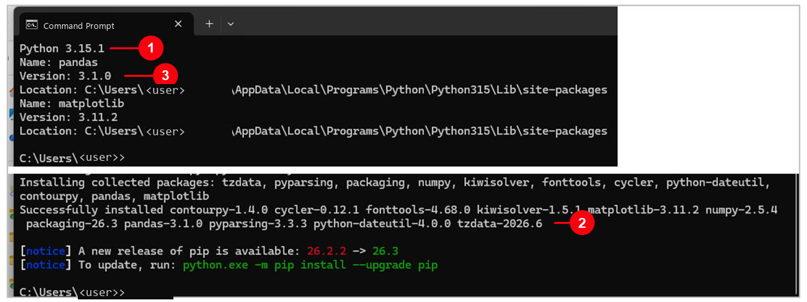
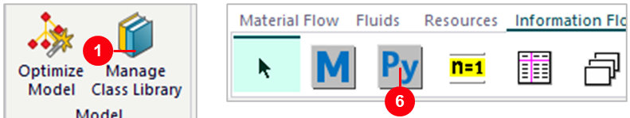
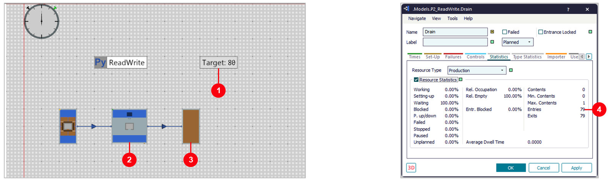
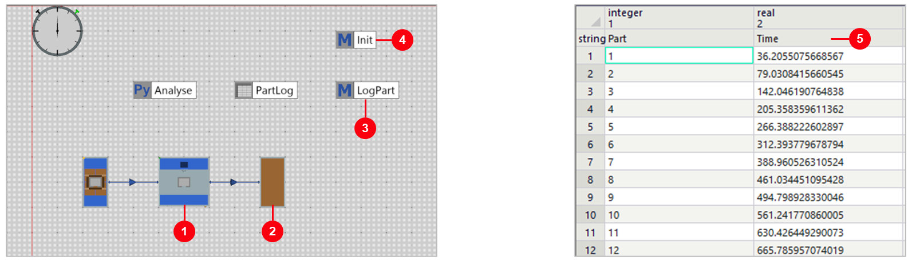
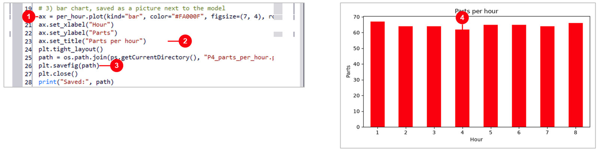

09. Python ใน Plant Simulation
วัตถุประสงค์การเรียนรู้
- ติดตั้ง Python 3.14 กับ pandas / matplotlib และเพิ่ม PythonModule ลงใน Class Library ได้
- เขียน print ตัวแปร และอ่าน / เขียนค่าของวัตถุในโมเดลด้วย current.ชื่อวัตถุ.ชื่อค่า ได้
- สร้างฟังก์ชันด้วย def แล้วให้ Method ของ SimTalk เรียกใช้ด้วย .call ได้
- ใช้ pandas นับชิ้นงานต่อชั่วโมงจากตาราง และวาดกราฟด้วย matplotlib ได้
09_Python.spp — บันทึกจาก Plant Simulation 2606 (เปิดในเวอร์ชันเก่ากว่าไม่ได้)
· เปิดไฟล์แล้วดับเบิลคลิก Frame ใน Class Library › Models
บทนี้สำหรับคนที่ไม่เคยเขียน Python มาก่อน — 6 ขั้นตอน จากติดตั้ง Python ถึงกราฟผลผลิต
ทุก Frame ในไฟล์ 09_Python.spp ทำไว้ให้แล้ว แค่เปิดหน้าโค้ด อ่านทีละบรรทัด แล้วกด Import ดูผลใน Console
ผลที่วัดได้: Python เปลี่ยน ProcTime 60 → 45 วินาที ผลผลิตขึ้นจาก 59 → 79 ชิ้น/ชม. (วัดจริง 2606)
09_Python.spp (4 Frame P1–P4)
· พื้นฐาน Method จากบท 07 SimTalk
ภาพรวม: 6 ขั้นตอน
| ขั้น | เรื่อง | ทำอะไร |
|---|---|---|
| 1 | ติดตั้ง Python | Python 3.14 + pandas, matplotlib ครั้งเดียวต่อเครื่อง |
| 2 | PythonModule | เพิ่มวัตถุ Py ลง Class Library แล้ววางใน Frame |
| 3 | Hello | print, ตัวแปร, คอมเมนต์ แล้วกด Import |
| 4 | อ่าน / เขียนค่า | Python เปลี่ยน ProcTime และ Variable ในโมเดล |
| 5 | ฟังก์ชัน | def สูตร OEE แล้วให้ Method เรียกใช้ |
| 6 | ตาราง + กราฟ | pandas นับชิ้นต่อชั่วโมง matplotlib วาดกราฟ |
4 Frame ในไฟล์นี้
| Frame | วัตถุหลัก | เรียนอะไร | ผลที่วัดได้ (2606) | ขั้นที่ |
|---|---|---|---|---|
| P1_Hello | PythonModule Hello | print, ตัวแปร, คอมเมนต์ | Console: Hello Plant Simulation, 16 | 3 |
| P2_ReadWrite | PythonModule ReadWrite, Station, Variable Target | อ่าน / เขียนค่าของวัตถุ | 79 ชิ้น/ชม. หลังแก้ ProcTime เป็น 45 s | 4 |
| P3_Function | PythonModule Calc, Method CallPython | def แล้วให้ Method เรียกด้วย .call | OEE 84.6% (0.84645) | 5 |
| P4_Data | ตาราง PartLog, Method LogPart / Init, PythonModule Analyse | pandas + matplotlib | 517 ชิ้นใน 8 ชม. · เฉลี่ย 64.6 ชิ้น/ชม. | 6 |
Workflow: Python ทำงานคู่กับโมเดลอย่างไร
| ลำดับ | งาน | ทำอะไร | ที่ไหน |
|---|---|---|---|
| 1 | เขียนโค้ด | พิมพ์ Python ในหน้าต่างของ PythonModule (แท็บ Content) | PythonModule |
| 2 | กด Import | Plant Simulation ส่งโค้ดให้ Python รัน ผล print ขึ้นใน Console | ปุ่ม Import |
| 3 | อ่าน / เขียนค่า | current.Station.ProcTime ใช้จุดคั่นเหมือน SimTalk | P2_ReadWrite |
| 4 | Method เรียก | Calc.call("oee", …) ส่งค่าเข้าไปและรับผลกลับ | P3_Function |
| 5 | วิเคราะห์ข้อมูล | อ่านตารางผลการรัน นับ สรุป วาดกราฟ | P4_Data |
พื้นฐาน Python 7 ข้อ เทียบกับ SimTalk ที่รู้แล้ว
| เรื่อง | SimTalk (บท 07) | Python | จำง่าย ๆ |
|---|---|---|---|
| ให้ค่าตัวแปร | a := 7 | a = 7 | Python ใช้ = ตัวเดียว |
| ประกาศตัวแปร | var a: integer := 7 | a = 7 | ไม่ต้องบอกชนิด Python รู้เอง |
| คอมเมนต์ | // ข้อความ หรือ -- ข้อความ | # ข้อความ | Python ไม่อ่านหลัง # |
| แสดงผล | print a | print(a) | Python ต้องมีวงเล็บ |
| จบบล็อก if / for / def | end · next | ย่อหน้า 4 ช่อง | บรรทัดหัวลงท้ายด้วย : |
| อ้างถึงวัตถุ | Station.ProcTime | current.Station.ProcTime | ขึ้นต้นด้วย current |
| ตัวพิมพ์เล็ก-ใหญ่ | Print = print | print ≠ Print | พิมพ์คำสั่ง Python ให้ตรงทุกตัว |
:= แบบ SimTalk ใน Python
· ตาราง DataTable ของ Plant Simulation ยังเริ่มนับแถว/คอลัมน์ที่ 1 เหมือนเดิม แม้ list ของ Python จะเริ่มที่ 0ขั้นที่ 1: ติดตั้ง Python 3.14 จาก python.org
- 1
Downloads›Windows— หน้า Python Releases for Windows - 2Python 3.14.x ใน Stable Releases (Siemens รองรับ 3.12, 3.13, 3.14)
- 3
Windows installer (64-bit)— ดาวน์โหลดไฟล์ .exe - 4ดับเบิลคลิกไฟล์ คลิกช่อง
Add python.exe to PATHให้ขึ้นเครื่องหมายถูก ☑ แล้วInstall Now(ไม่มีในภาพ)
setPythonDLLPathขั้นที่ 1: ติดตั้งไลบรารี pandas และ matplotlib

Windows › พิมพ์ cmd › Command Prompt แล้วพิมพ์ทีละบรรทัด:
python --version
python -m pip install pandas matplotlib
python -m pip show pandas matplotlib- 1
python --version— ต้องขึ้นเลขเวอร์ชัน ถ้าไม่ขึ้น = ตอนติดตั้งช่อง Add python.exe to PATH ไม่มีเครื่องหมายถูก - 2
python -m pip install pandas matplotlib— รอจนขึ้น Successfully installed - 3
python -m pip show pandas matplotlib— ตรวจว่าติดตั้งแล้ว และอยู่ใน Python ตัวเดียวกัน
ขั้นที่ 2: เพิ่ม PythonModule ลงใน Class Library

- 1
Home›Manage Class Library— ปุ่มขวาสุดของริบบอน (ภาพขวา) - 2
Basic Objects— แท็บแรกของหน้าต่าง - 3
InformationFlow— เปิดกลุ่มนี้ - 4คลิกช่อง
PythonModule☑ อยู่ใต้ Method - 5
OKแล้ว Toolbox › Information Flow จะมีไอคอน Py - 6ลากไอคอน Py ลงใน Frame เหมือนวาง Method แล้วตั้งชื่อ
ขั้นที่ 3: P1_Hello — print และตัวแปร
- 1
# …— คอมเมนต์ อธิบายโค้ด Python ข้ามไป - 2
print("…")— แสดงข้อความใน Console - 3
a = 7·b = 9— สร้างตัวแปรเก็บค่า แล้วprint(a + b)ได้ 16 - 4
Import— ส่งโค้ดให้ Python รัน (หรือกด F5 ในช่องโค้ด) - 5Console — ผลขึ้นตามลำดับบรรทัด: Hello Plant Simulation, 16, Machine: Station1
โค้ดใน PythonModule Hello (Frame P1_Hello › ดับเบิลคลิก Hello):
# A line that starts with # is a comment
print("Hello Plant Simulation")
a = 7 # variable a = 7 (use =, not :=)
b = 9
print(a + b) # 16
machine = "Station1" # text goes in quotes
print("Machine:", machine)Window › Console · ข้อความผิดพลาดของ Python ก็ขึ้นที่นี่ (ภาษาอังกฤษ)
· machine = "Station1" คือตัวแปรข้อความ ต้องอยู่ในเครื่องหมายคำพูด · Import ครั้งต่อไปจะรันโค้ดซ้ำ · Shift + Import = ล้างตัวแปรเก่าก่อน (Help 2606)ขั้นที่ 4: P2_ReadWrite — อ่านและเขียนค่าในโมเดล
- 1
current= Frame ที่ PythonModule นี้วางอยู่ - 2
current.Station.ProcTime— อ่านเวลาทำงาน ได้ 0:01:00 (1 นาที) - 3
current.Station.ProcTime = 45— เขียนค่าใหม่ ตัวเลขคือวินาที - 4
current.Target.Value = 80— Variable ต้องมี.Value - 5Console ก่อน / หลัง: 0:01:00 → 0:00:45 · 60 → 80
โค้ดใน PythonModule ReadWrite (Frame P2_ReadWrite › ดับเบิลคลิก ReadWrite › Import):
# current = the Frame this PythonModule is in
# 1) read a value: current.<object>.<attribute>
print("ProcTime before:", current.Station.ProcTime)
# 2) write a new value with = (seconds)
current.Station.ProcTime = 45
print("ProcTime after:", current.Station.ProcTime)
# 3) a Variable: read and write .Value
print("Target before:", current.Target.Value)
current.Target.Value = 80
print("Target after:", current.Target.Value)root = Frame บนสุดที่มี EventController · basis = ราก Class Library (basis.Models.P2_ReadWrite.Station) · self = PythonModule เองขั้นที่ 4: ผล — รัน 1 ชั่วโมง ได้ 79 ชิ้น (เดิม 59)

- 1
Target: 80— ค่าที่ Python เขียนลง Variable แสดงบน Frame - 2
Station— ทำงานชิ้นละ 45 วินาทีแล้ว (เดิม 60) - 3
Drain—Home›Startรันจนจบ 1 ชั่วโมง แล้วดับเบิลคลิก Drain - 4Entries 79 — ชิ้นที่ออกจากไลน์ใน 1 ชั่วโมง · ก่อน Import ได้ 59
ขั้นที่ 5: P3_Function — สร้างฟังก์ชันด้วย def
- 1
def oee(availability, performance, quality):— ชื่อฟังก์ชัน + ค่าที่รับเข้า ลงท้ายด้วย: - 2ย่อหน้า 4 ช่อง — บรรทัดที่ย่อหน้าคือเนื้อในของฟังก์ชัน
- 3
return— ส่งผลลัพธ์กลับ = A × P × Q - 4
Import— รันบรรทัด print ท้ายไฟล์ เพื่อทดสอบ - 5OEE = 84.6 % — 0.90 × 0.95 × 0.99 = 0.84645 →
percent()ปัดเป็น 84.6
โค้ดใน PythonModule Calc (Frame P3_Function › ดับเบิลคลิก Calc › Import):
# def makes a function; the line ends with :
# lines inside the function are indented 4 spaces
def oee(availability, performance, quality):
return availability * performance * quality
def percent(x):
return round(x * 100, 1)
# test when you click Import
print("OEE =", percent(oee(0.90, 0.95, 0.99)), "%")percent(oee(...)) = ส่งผลของ oee เข้า percent ต่อ
· round(x * 100, 1) = คูณ 100 แล้วปัดทศนิยม 1 ตำแหน่ง · OEE = Availability × Performance × Quality (ดู OEE ในบท 03)
· ไม่ต้องติดตั้งอะไรเพิ่ม ใช้ได้กับ Python ทุกเครื่องขั้นที่ 5: Method เรียกฟังก์ชัน Python ด้วย .call
- 1
Calc.call("oee", 0.90, 0.95, 0.99)— ชื่อฟังก์ชันอยู่ใน " " ตามด้วยค่าที่ส่งเข้า - 2
OEE := r— ใน SimTalk เขียน Variable ตรง ๆ ไม่มี .Value - 3แท็บ
Toolsของหน้าต่าง Method - 4
Run— รัน Method นี้ - 5OEE: 0.84645 — Variable บน Frame ได้ค่าจาก Python
- 6Console:
OEE from Python =0.84645
โค้ด SimTalk ใน Method CallPython (ดับเบิลคลิก CallPython › Tools › Run):
// call the Python function oee in the PythonModule Calc
var r: real := Calc.call("oee", 0.90, 0.95, 0.99)
OEE := r
print "OEE from Python =", r.call โหลดโค้ดให้เอง (ใช้ได้ทันทีหลังเปิดไฟล์)
· ส่งค่าแบบระบุชื่อ: Calc.callKw("oee", ["availability", 0.8, …]) ได้ 0.72
· นี่คือวิธีที่ใช้บ่อยที่สุด: เขียนสูตรยาก ๆ ใน Python แล้วให้ Method ของ SimTalk เรียกใช้ระหว่างรันcurrent.OEE.Value แต่ใน SimTalk เขียน OEE := r
(ถ้าใส่ .Value ใน SimTalk จะขึ้น error: A 'real' cannot accept the method 'Value')ขั้นที่ 6: P4_Data — เก็บเวลาที่ชิ้นงานเสร็จลงตาราง

- 1
Station— เวลาสุ่ม Uniform 30–80 วินาที - 2
Drain›Controls›Entrance=LogPart— เรียก Method ทุกครั้งที่ชิ้นงานเข้า - 3
LogPart—PartLog.writeRow(1, PartLog.YDim + 1, เลขชิ้น, SimTime) - 4
Init— ล้างตารางเมื่อเริ่มรัน (PartLog.delete) - 5
PartLog— 517 แถว · Time = วินาทีที่ชิ้นงานเสร็จ
Home › Start รัน 8 ชั่วโมง ได้ 517 ชิ้น · ชื่อตารางใช้ Log ไม่ได้ เพราะเป็นคำสงวนของ SimTalk จึงตั้งชื่อ PartLogขั้นที่ 6: Analyse — pandas นับชิ้นงานต่อชั่วโมง
- 1
import pandas as pd— เรียกใช้ไลบรารี ตั้งชื่อย่อ pd - 2
rows = current.PartLog[None]— อ่านทั้งตาราง แถวแรก = หัวตาราง - 3
pd.DataFrame(rows[1:], columns=rows[0])— ทำเป็นตารางของ pandas - 4
groupby("Hour").size()— นับจำนวนแถวในแต่ละชั่วโมง - 5
Import— รันทั้งหมด 1.2 วินาที - 6ชั่วโมงละ 62–67 ชิ้น — ผลของ
print(per_hour) - 7Mean per hour: 64.6 — ค่าเฉลี่ยต่อชั่วโมง
โค้ดใน PythonModule Analyse บรรทัด 1–17 (ดับเบิลคลิก Analyse › Import หลังรันจบ):
import os
import pandas as pd # tables
import matplotlib
matplotlib.use("Agg") # draw into a file, no window
import matplotlib.pyplot as plt # charts
import PlantSimulation as ps
# 1) read the whole table PartLog (row 0 = column names)
rows = current.PartLog[None]
df = pd.DataFrame(rows[1:], columns=rows[0])
print("Parts:", len(df))
# 2) count the parts finished in each hour
df["Hour"] = (df["Time"] // 3600 + 1).astype(int)
per_hour = df.groupby("Hour").size()
print(per_hour)
print("Mean per hour:", round(per_hour.mean(), 1))Hour = (Time // 3600) + 1 คือหารเอาส่วนเต็มด้วย 3600 วินาที แล้วบวก 1 ให้ชั่วโมงแรกเป็น 1
· ตรวจแล้ว: นับเองจากตาราง PartLog ได้ 67, 64, 64, 62, 65, 65, 64, 66 ตรงกับ pandasขั้นที่ 6: matplotlib วาดกราฟแท่ง แล้วบันทึกเป็นรูป

- 1
per_hour.plot(kind="bar")— กราฟแท่งจากผลนับ - 2
set_xlabel/set_ylabel/set_title— ชื่อแกนและหัวกราฟ - 3
plt.savefig(path)— บันทึกรูปข้างไฟล์โมเดล (ps.getCurrentDirectory()) - 4ชั่วโมงที่ 4 ต่ำสุด 62 ชิ้น — เห็นความผันผวนทันทีจากกราฟ
ท้ายโค้ด Analyse บรรทัด 19–28:
# 3) bar chart, saved as a picture next to the model
ax = per_hour.plot(kind="bar", color="#FA000F", figsize=(7, 4), …
ax.set_xlabel("Hour")
ax.set_ylabel("Parts")
ax.set_title("Parts per hour")
plt.tight_layout()
path = os.path.join(ps.getCurrentDirectory(), "P4_parts_per_hour.png")
plt.savefig(path)
plt.close()
print("Saved:", path)plt.show() ต้องปิดหน้าต่างกราฟก่อนกลับไปใช้ Plant Simulation (Help 2606)
· สีแดงตั้งด้วย color="#FA000F" · บรรทัด 20 ในภาพยาวเกินขอบหน้าต่าง (ตรง …) เปิด Analyse ในไฟล์ 09_Python.spp เพื่อดูบรรทัดเต็ม
· ต่อยอด: บันทึกเป็น Excel ด้วย df.to_excel(...) (ต้อง pip install openpyxl เพิ่ม ยังไม่ได้ทดสอบในบทนี้)สรุป: คำสั่ง Python ที่ใช้ในบทนี้
| คำสั่ง | ทำอะไร | Frame |
|---|---|---|
print("…") · a = 7 · # … | แสดงผล · สร้างตัวแปร · คอมเมนต์ | P1_Hello |
current.Station.ProcTime = 45 | อ่าน / เขียนค่าของวัตถุใน Frame เดียวกัน | P2_ReadWrite |
current.Target.Value = 80 | อ่าน / เขียน Variable (ใน Python ต้องมี .Value) | P2_ReadWrite |
def oee(a, p, q): return a * p * q | สร้างฟังก์ชัน (ย่อหน้า 4 ช่อง) | P3_Function |
Calc.call("oee", 0.9, 0.95, 0.99) | SimTalk เรียกฟังก์ชัน Python แล้วรับผลกลับ | P3_Function |
current.PartLog[None] · pd.DataFrame | อ่านทั้งตาราง แล้วทำเป็นตาราง pandas | P4_Data |
groupby(...).size() · plot · savefig | นับตามกลุ่ม · วาดกราฟ · บันทึกรูป | P4_Data |
ลองเอง: แก้ตัวเลขในโค้ดแล้วดูผล
| Frame | ลองเปลี่ยน | ผล (วัดจริง 2606) | เรียนรู้อะไร |
|---|---|---|---|
| P1_Hello | print(a * b) | 63 (7 × 9) | * = คูณ |
| P2_ReadWrite | ProcTime = 30 แล้ว Start | 119 ชิ้น/ชม. | Python คุมค่าโมเดลได้ |
| P2_ReadWrite | ProcTime = 60 (ค่าเดิม) | 59 ชิ้น/ชม. | เทียบกับ 45 s = 79 |
| P3_Function | Calc.callKw("oee", ["availability", 0.8, "performance", 0.9, "quality", 1.0]) | 0.72 | ส่งค่าแบบระบุชื่อ |
| P4_Data | Station Uniform 30–60 s แล้วรัน + Import | 638 ชิ้น · เฉลี่ย 79.8 | เวลาสั้นลง ผลิตได้มากขึ้น |
| P4_Data | Station Uniform 50–60 s | 522 ชิ้น · 64–66 ต่อชม. | เฉลี่ยใกล้ 30–80 s แต่นิ่งกว่า (62–67) |
print(a * b) = 7 × 9 คิดเอง ไม่ได้รัน
· แถวสุดท้ายเป็นข้อคิดที่ดี: ค่าเฉลี่ยเวลาเท่ากัน (55 s) แต่ช่วงสุ่มแคบกว่า ผลผลิตแต่ละชั่วโมงจึงนิ่งกว่า กราฟจาก matplotlib ช่วยให้เห็นความต่างนี้ทันทีปัญหาที่พบบ่อย และวิธีแก้
| อาการ | วิธีแก้ |
|---|---|
| กด Import แล้วไม่เห็นอะไร | แท็บ Window › Console |
| Access to the computer is prohibited | File › Model Settings › General: คลิกช่อง Prohibit Access to the Computer ให้เครื่องหมายถูกหายไป ☐ แล้ว Save |
| ModuleNotFoundError: No module named 'pandas' | pip install pandas ใน Python ตัวที่ Plant Simulation ใช้ · มีหลายตัวใช้ setPythonDLLPath |
| IndentationError | บรรทัดในฟังก์ชันต้องย่อหน้าเท่ากัน (4 ช่อง) |
SyntaxError ตรง := | Python ใช้ = ตัวเดียว (:= เป็นของ SimTalk) |
| Method: A 'real' cannot accept the method 'Value' | ใน SimTalk เขียน OEE := r ไม่ต้องมี .Value (Python ต้องมี) |
| Plant Simulation ค้างหลังใช้ pandas แล้วเปิดไฟล์ใหม่ | ปิด Plant Simulation แล้วเปิดใหม่ทุกครั้งที่เปลี่ยนไฟล์ (Help 2606) |
| ตั้งชื่อตาราง Log ไม่ได้ | Log เป็นคำสงวนของ SimTalk ใช้ชื่ออื่น เช่น PartLog |
แหล่งเรียนต่อ
- Plant Simulation Help 2606 · PythonModule (หน้า 6640–6677) · setPythonDLLPath (หน้า 9617)
- Siemens: วิดีโอ PythonModule บน YouTube (ลิงก์จาก Help 2606) — youtu.be/2QJeW5r1AF4
- python.org › Downloads › Windows — www.python.org/downloads/windows/
- Igor Kunjavskij, Plant Simulation 2404 Python module (User Conference 2024)
current.Target.Value = 80 แต่ใน Method CallPython ของ P3_Function
เขียน OEE := r โดยไม่มี .Value — ถ้าเผลอเขียน OEE.Value := r ใน Method จะเกิดอะไรขึ้น และต้องแก้อย่างไร?
OEE := r — ส่วนใน Python ต้องมี .Value เสมอเมื่ออ่าน / เขียน Variable